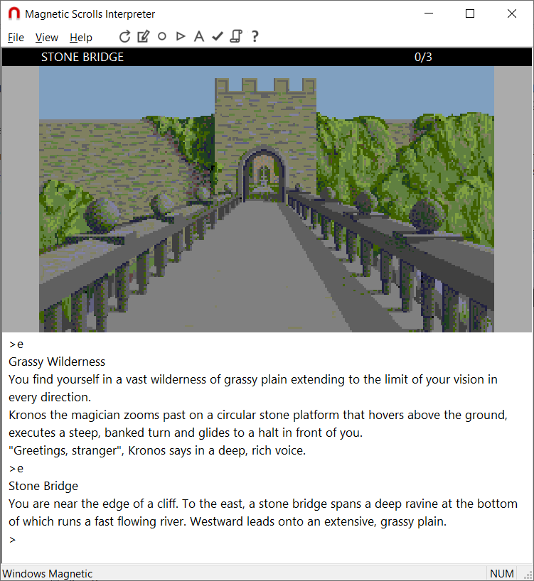
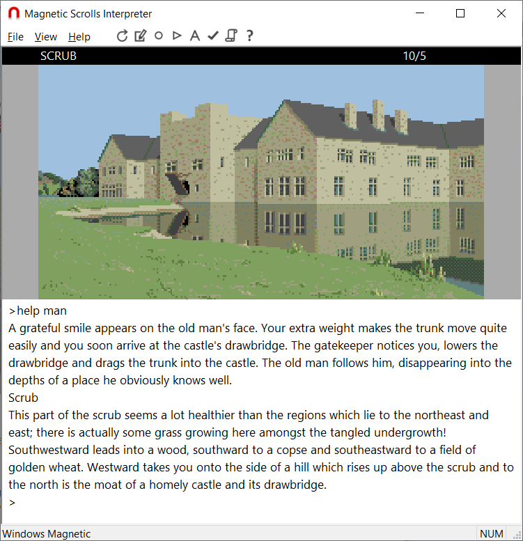

The Magnetic interpreter was written by Niclas Karlsson, with additional code by myself, Stefan Meier and Paul David Doherty.
The current version is available from Magnetic's GitHub release page. Extracting the game data from the original releases can be a complex process; for more information see the Magnetic page at Stefan's Magnetic Scrolls Memorial web site.
Here are two screenshots of the interpreter in action: first The Pawn, and then The Guild of Thieves.

